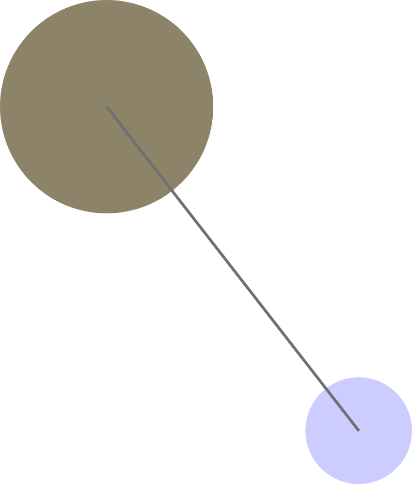
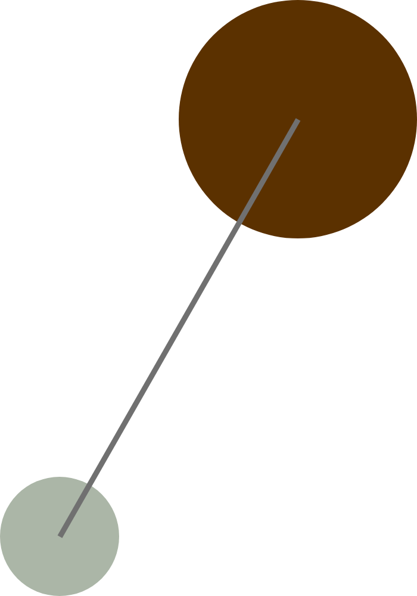
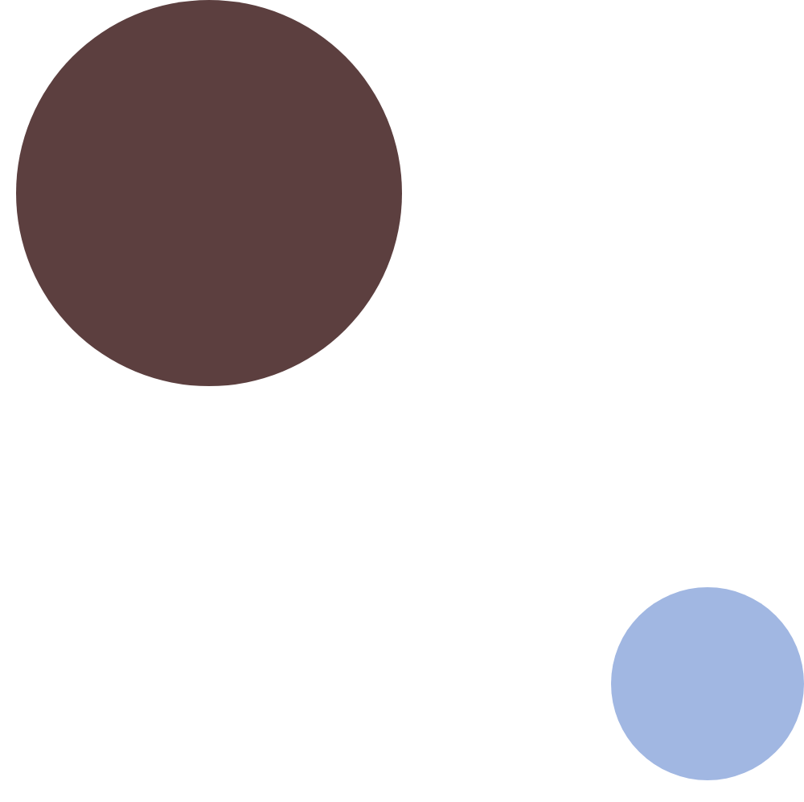

1. Open up Adobe XD.
2. Create a custom artboard, with its width your shoe size times 100, and its height your birth year divided by two (rounding down).
3. Create one circle. Makes its width and height your age times 10.
4. Place the circle touching one of the four corners of the artboard depending on your favorite season.
5. If your birth month is an odd number, color the circle in periwinkle. If even, color it sage. Remove its border.
6. Create a second circle. Double its size of the first and place it touching the opposite corner.
7. Color the second circle your eye color. Remove its border.
8. Draw a line connecting the center of the two circles. Make its thickness the last digit of your G number.
  